도시계획기사 (2012-03-04 기출문제)
1과목: 도시계획론
1. 다음 중 고대 메소포타미아와 이집트의 도시에서 시작되었던 것을 히포다무스(Hippodamus)가 그리스의 도시계획에 적용시킨 것은?
- 격자형 가로망
- 공공시설의 중앙배치
- 공중정원의 설치
- 성곽의 축조
(정답률: 91%)

2. 아래의 설명과 같은 르네상스시대의 이상도시를 구성하고자 하였던 사람은?
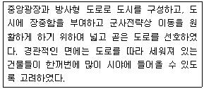
- 비아지오 로제티(Biaggio Rossetti)
- 도메니코 폰타나(Domenico Fontana)
- 레온 알베르티(Leon Alberti)
- 레오나르도 다빈치(Leonardo da Vinci)
(정답률: 75%)
3. 다음의 설명에 해당 하는 도시는?
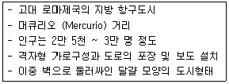
- 카스트라(Castra)
- 팀가드(Timgard)
- 아오스타(Aostra)
- 폼페이(Pompeii)
(정답률: 91%)
4. 다음 중 통행 기종점표에 나타난 존간 통행량의 신뢰성을 검증하기 위한 조사는?
- 쿼터라인조사
- 대중교통통행조사
- 스크린라인조사
- 보행자통행조사
(정답률: 79%)
5. 다음 중 압축도시(Compact City)의 도시구조로 적합하지않은 것은?
- 저에너지 소비
- 저이동 유발
- 저오염 배출
- 저밀도 건축
(정답률: 92%)
6. 다음 중 데그로브(Degrove)가 주장한 도시성장관리의 필요성으로 옳지 않은 것은?
- 상업적이고 무질서한 개발 등을 통한 생태계의 파괴와 환경 오염을 예방하기 위한 것이다.
- 도시개발로 인한 공지(open space)의 감소 및 농경지의 도시용 토지로의 전환을 유도하기 위한 것이다.
- 도시성장으로 인한 교통의 혼잡가중을 방지하기 위한 것이다.
- 공공부문 사회간접자본 비용지출을 축소하기 위한 것이다.
(정답률: 63%)
7. 다음과 같은 특징을 가지고 있는 공원의 종류는?
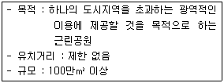
- 도보권 근린공원
- 광역권 근린공원
- 근린생활권 근린공원
- 도시지역권 근린공원
(정답률: 88%)
8. 다음 중 우리나라 국가GIS(NGIS) 3차 사업(2006~2010)의 기본 계획 방향에 해당하지 않는 것은?
- GIS 기반 전자정부 구현
- GIS를 이용한 뉴비즈니스 창출
- 유비쿼터스 환경을 지향한 지능형 국토건설
- 국가 공간정보의 디지털 구축 초석 마련
(정답률: 74%)
9. 다음 중 도시계획의 의의와 필요성에 대한 설명으로 옳지 않은 것은?
- 도시의 여러 가지 기능을 원활하게 해 준다.
- 주민들이 생활하기에 풍요롭고 양호한 환경을 만들어준다.
- 개인 및 집단행동을 우선시하며 외부효과를 고려하는 기능이 있다
- 공공 및 민간 활동의 분배효과를 고려하는 사회적 기능을 수행 한다.
(정답률: 90%)
10. 다음 중 도시공간이나 가로에서 시각적 연속성을 주기 위한 경관계획요소로 옳은 것은?
- 시각회랑(Visual corridor)
- 시각개폐율(Visual Openness)
- 시각차폐율(visual Block Ratio)
- 조망점(view Point)
(정답률: 80%)
11. 아래 그림이 나타내는 이론과 “3”(빗금친 부분)에 해당하는 토지이용이 모두 옳게 연결된 것은?
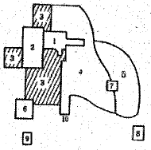
- 다핵심이론 - 고소득층 주거지구
- 선형이론 - 도매경공업지구
- 다핵심이론 - 저소득층 주거지구
- 선형이론 – 점이지대
(정답률: 88%)
12. 다음 중 용도지구의 분류에 해당하지 않는 것은?(오류 신고가 접수된 문제입니다. 반드시 정답과 해설을 확인하시기 바랍니다.)
- 개발진흥지구
- 자연환경보전지구
- 특정용도제한지구
- 시설보호지구
(정답률: 55%)
13. 다음 중 베버(M. Weber)가 정의한 도시의 의미로 옳은 것은?
- 지적 엘리트를 포함한 각종 비농업적 전문가가 많으며 상당한 규모의 인구와 인구밀도를 갖는 공동체
- 주민의 대부분이 공업적 또는 상업적인 영리수입에 의해 생활하고 정주하는 곳
- 농촌에 비해 전문직 종사자가 많고 인공환경이 우월하며 인구 구성의 이질성이 강한 곳
- 도시의 결정요인은 예술·문화·종교·민주적인 정치형태이며, 평등한 시민이 활기에 차 있는 곳
(정답률: 64%)
14. 도시계획가가 지리 및 공간자료를 바탕으로 수행할 수 있는 주요 활동인 4M에 해당하지 않는 것은?
- 측정(Measurement)
- 도면화(Mapping)
- 입체화(Massing)
- 모형화(Modeling)
(정답률: 64%)
15. 다음 중 경관법에 따른 경관계획의 내용으로 포함되어야 하는 사항에 해당하지 않는 것은?
- 경관자원의 조사 및 평가에 관한 사항
- 경관형성의 전망 및 대책 수립에 관한 사항
- 경관계획의 수립권자 및 대상지역 수립에 관한 사항
- 경관지구와 미관지구의 관리 및 운용에 관한 사항
(정답률: 58%)
16. 다음 중 4단계 교통수요추정법을 단계별로 옳게 나열한 것은?
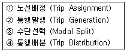
- ① - ③ - ④ - ②
- ④ - ② - ① - ③
- ③ - ① - ④ - ②
- ② - ④ - ③ - ①
(정답률: 90%)
17. 다음 중 4단계 교통수요추정법에 대한 설명으로 옳지 않은 것은?
- 교통수요 추정에서 전통적으로 가장 많이 사용되어온 방법이다.
- 총체적 자료에 의존하기 때문에 통행자의 행태적 측면은 거의 고려하지 않는다.
- 계획가나 분석가의 주관이 개입될 여지가 전혀 없다는 특징이 있다.
- 분석결과에 대한 적절성을 검증하면서 순서적으로 추정해가는 장점이 있다.
(정답률: 86%)
18. 다음의 도시계획 관련 이론 중 논리의 일관성이나 최적의 대안을 제시하기보다 지속적인 계획의 조정과 적용을 통하여 계획의 목표를 추구하는 접근방법은?
- 종합적 계획이론 (Synoptic Planning)
- 점진적 계획이론 (Incremental Planning)
- 교류적 계획이론 (Transactive Planning)
- 급진적 계획이론 (Radical Planning)
(정답률: 85%)
19. 1990년대 이후 미국에서 시작된 도시개발전략으로, 도시 공간의 무분별한 확산에 따른 도시문제를 환경계획 및 설계를 통해 해결하고자 하는 건축·도시계획운동을 지칭하는 것은?
- 컴팩트 시티
- 어반빌리지
- 뉴어바니즘
- 생태도시계획
(정답률: 75%)
20. 다음 중 도시공원 및 녹지 등에 관한 법률에 따른 공원녹지에 해당하지 않는 것은?
- 도시공원·녹지·유원지
- 광장·보행자전용도로 등 녹지가 조성된 공간 또는 시설
- 도시자연공원구역
- 나무·잔디·꽃·지피식물(地被植物) 등의 식생이 자라는 공간
(정답률: 56%)
2과목: 도시설계 및 단지계획
21. 다음 중 교통광장에 대한 설명으로 옳지 않은 것은?
- 교통광장은 교차점광장, 역전광장, 주요시설광장으로 구분한다.
- 역전에서의 교통혼잡을 방지하고 이용자의 편의를 도모하기 위하여 철도역 앞에 설치한다.
- 주간선도로의 교차지점에 광장을 설치하는 경우 접속도로의 기능에 따라 입체교차방식으로 하거나 교통섬, 변속차로 등에 의한 평면교차방식으로 한다.
- 교통광장은 보행광장, 근린광장, 건축물부설광장으로 구분한다.
(정답률: 80%)
22. 다음 중 우리나라에 도시설계 제도가 도입된 것에 관한 설명으로 옳지 않은 것은?
- 지구단위계획과 같은 제도를 처음 도입한 것은 건축법을 통해 도시설계 조항을 법제화한 1980년이었다.
- 도시설계를 처음 도입할 당시 주된 관심사는 간선 가로변의 미관 개선에 있었다.
- 도시설계 제도가 도입된 지 5년 후인 1985년에 상세계획 제도가 도입되었다.
- 도시설계 제도와 관련된 법규 중 지구지정 규정의 신설은 1991년에 이루어졌다.
(정답률: 63%)
23. 다음 중 등고선과 단면의 관계가 옳지 않은 것은?
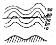
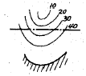
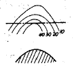
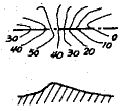
(정답률: 73%)
24. 다음 중 Perry가 주장한 근린주구이론의 내용으로 옳지 않은 것은?
- 초등학교를 중심으로 구성한다.
- 소공원과 위락공간의 체계가 있어야 한다.
- 상업시설은 주구의 중심에 배치한다.
- 주구의 경계는 간선도로에 의해 구획되어야 한다.
(정답률: 73%)
25. 다음 중 도시계획시설로서 학교의 결정기준으로 옳지 않은 것은?(관련 규정 개정전 문제로 여기서는 기존 정답인 2번을 누르면 정답 처리됩니다. 자세한 내용은 해설을 참고하세요.)
- 초등학교는 근린주거구역단위로 설치하고, 근린주거구역의 범위는 새로이 개발 되는 지역의 경우에 2천 세대 내지 3천 세대를 1개 근린주거구역으로 한다.
- 초등학교의 통학거리는 1천미터 이내로 하고 소음도가 80dB 이하를 유지하도록 설치한다.
- 중학교 및 고등학교는 2개의 근린주거구역단위에 1개의 비율로 배치하되, 적절히 조정할 수 있다.
- 일조·통풍 및 배수가 잘 되는 지역에 설치한다.
(정답률: 71%)
26. 다음 중 건축물의 특정 층이 계획에서 정한 선의 수직면을 넘어 돌출하여 건축할 수 없는 것으로, 보행공간이나 공동 주차통로 등의 확보가 필요한 곳에 지정하는 것은?
- 건축지정선
- 벽면지정선
- 벽면한계선
- 건축한계선
(정답률: 61%)
27. 다음 중 기단부의 옥상을 옥상정원으로 개발하여 고층 주거부의 오픈스페이스로 활용 할 수 있으며, 신개발지의 대규모 쇼핑타운에 적합한 복합용도 건물의 형태에 따른 유형은?
- 단순수직중첩형
- 병렬연결형
- 독립분리형
- 플랫폼형
(정답률: 80%)
28. 다음 중 공동주택의 일조 등의 확보를 위한 높이 제한에 대한 설명으로 옳은 것은?
- 같은 대지에서 두 동 이상의 건축물이 마주보고 있는 경우 그 대지의 모든 세대가 하지를 기준으로 9시에서 15시 사이에 2시간 이상을 계속하여 일조를 확보할 수 있는 거리 이상으로 할 수 있다.
- 같은 대지에서 두 동 이상의 건축물이 마주보고 있는 경우 그 대지의 모든 세대가 하지를 기준으로 10시에서 15시 사이에 2시간 이상을 계속하여 일조를 확보할 수 있는 거리 이상으로 할 수 있다.
- 같은 대지에서 두 동 이상의 건축물이 마주보고 있는 경우 그 대지의 모든 세대가 동지를 기준으로 9시에서 15시 사이에 2시간 이상을 계속하여 일조를 확보할 수 있는 거리 이상으로 할 수 있다.
- 같은 대지에서 두 동 이상의 건축물이 마주보고 있는 경우 그 대지의 모든 세대가 동지를 기준으로 10시에서 15시 사이에 2시간 이상을 계속하여 일조를 확보할 수 있는 거리 이상으로 할 수 있다.
(정답률: 85%)
29. 다음 중 도보권 근린공원의 유치거리와 규모 기준이 모두 옳은 것은?
- 500m 이하, 30000m2 이상
- 500m 이하, 50000m2 이상
- 1000m 이하, 30000m2 이상
- 1000m 이하, 50000m2 이상
(정답률: 75%)
30. 다음 중 평행주차형식 외의 경우에 일반형과 장애인전용주차 단위구획의 규모 기준이 모두 옳은 것은? (단,'너비(m 이상) x 길이(m 이상)'임)
- 일반형 2.0 x 6.0, 장애인전용 3.3 x 5.0
- 일반형 2.0 x 5.0, 장애인전용 3.3 x 6.0
- 일반형 2.3 x 6.0, 장애인전용 3.3 x 5.0
- 일반형 2.3 x 5.0, 장애인전용 3.3 x 5.0
(정답률: 79%)
31. 다음 중 도로의 배치간격 기준으로 옳지 않은 것은?
- 주간선도로와 주간선도로의 배치간격 : 2000m 내외
- 주간선도로와 보조간선도로의 배치간격 : 500m 내외
- 보조간선도로와 집산도로의 배치간격 : 250m 내외
- 국지도로의 배치간격 : 가구의 짧은 변 사이의 배치간격은 90m 내지 150m 내외, 긴 변 사이의 배치간격은 25m 내지 60m 내외
(정답률: 73%)
32. 다음 중 케빈 린치(Kevin Lynch)가 주장한 도시를 이미지화 할 수 있도록 하는 도시의 물리적 구조에 관한 요소에 해당하지 않는 것은?
- 구역 (district)
- 링크 (link)
- 결절점 (node)
- 랜드마크 (landmark)
(정답률: 84%)
33. 다음 중 주거단지계획의 기본적인 목표와 거리가 먼 것은?
- 에너지의 효율적 이용과 절약
- 거주자 상호간 접촉의 최소화
- 거주자의 건강과 쾌적성 유지
- 변화에의 융통성과 적응성 부여
(정답률: 83%)
34. 카밀로 지테(Camillo Sitte)는 광장의 최대 크기는 광장을 지배 하고 있는 넓은 건물 높이의 얼마를 초과해서는 안 된다고 제시 하였는가?
- 0.5배
- 0.75배
- 1.0배
- 2.0배
(정답률: 77%)
35. 다음 중 획지계획에 대한 설명으로 옳지 않은 것은?
- 획지계획의 기본 목표는 주택용지의 경우 토지이용의 효율성과 주거의 쾌적성을 보장하는 것이다.
- 다양한 규모의 획지로 분할하여 여러 계층의 수요를 고르게 만족시킬 수 있도록 하여야 한다.
- 용도에 맞는 적정 획지를 계획하도록 한다.
- 간선가로망 주변에 소형가구를 많이 배치하여 상업시설과 부대시설에 의한 가로변의 미관 저해를 방지하도록 한다.
(정답률: 87%)
36. 다음 중 국토의 계획 및 이용에 관한 법령에 따라 제1종 지구단위계획으로 지정할 수 있는 지역이 아닌 것은?
- 주택법에 따른 대지조성사업지구
- 관광진흥법에 따라 지정된 관광특구
- 택지개발촉진법에 따라 지정된 택지개발예정지구
- 국토의 계획 및 이용에 관한 법률에 따라 지정된 도시자연공원구역
(정답률: 45%)
37. 다음 중 특별계획구역에 대한 설명으로 옳지 않은 것은?
- 지구단위계획구역 중에서 현상설계 등에 의하여 창의적 개발안을 받아들일 필요가 있거나 계획안을 작성하는데 상당한 시간이 걸릴 것으로 예상되어 충분한 시간을 가질 필요가 있을 때에 별도의 개발안을 만들어 지구단위계획으로 수용 결정하는 구역을 말한다.
- 복잡한 지형의 재개발구역을 종합적으로 개발하는 경우처럼 지형조건상 지반의 높낮이 차이가 심하여 건축적으로 상세한 입체계획을 수립하여야 하는 경우 특별계획구역으로 지정한다.
- 특별계획구역에 대한 계획내용은 지구단위계획에 포함하여 결정한다.
- 구역 내 권리관계가 복잡하여 민간개발보다 공공개발과 연계가 주목적이지만 주민의 합의가 있는 경우는 민간사업과 연계가 가능하다.
(정답률: 66%)
38. 다음 중 제1종 지구단위계획의 부문별 계획을 수립하는 경우 포함하여야 하는 사항에 해당하지 않는 것은?
- 용도지역 및 용도지구
- 교육시설의 배치와 규모 계획
- 경관계획
- 건축물의 형태와 색채에 관한 계획
(정답률: 43%)
39. 다음 중 도시의 개방 공간(open space)에서 시민이 얻을 수 있는 만족감이 아닌 것은?
- 생활의 풍요로움
- 제한된 도시생활의 연속
- 자발적 활동
- 자유감
(정답률: 88%)
40. 아래의 조건에 따른 공업지역의 소요 면적은 얼마인가?
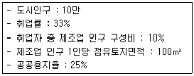
- 29.7ha
- 44ha
- 48.9ha
- 88ha
(정답률: 69%)
3과목: 도시개발론
41. 다음 중 수출기반모형이 가정하는 사항이 아닌 것은?
- 동일한 노동 생산성
- 동일한 소비 수준
- 폐쇄된 경제
- 동일한 생산비
(정답률: 50%)
42. 다음 중 아래의 ①과 ②에 들어갈 말이 모두 옳은 것은?
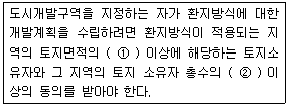
- ① 2/3 ② 2/3
- ① 2/3 ② 1/2
- ① 1/2 ② 1/2
- ① 1/2 ② 2/3
(정답률: 81%)
43. 다음 중 도시개발사업에서의 인·허가에 대한 설명으로 옳지 않은 것은?
- 허가(許可)란 법령에 의하여 금지되어 있는 행위를 해제 하여 적법하게 하는 것을 의미한다.
- 인가(認可)란 제3자의 행위를 보충하여 그 법률상의 효력을 완성시키는 행위를 의미한다.
- 승인(承認)은 국가 또는 지방자치단체가 특정 행위에 대하여 부여하는 동의·승낙 등을 의미한다.
- 허가를 요하는 행위를 허가 없이 행하거나, 인가를 받지 않고 한 행위는 처벌의 대상이 된다.
(정답률: 57%)
44. 다음 중 도시개발에 대한 설명으로 옳지 않은 것은?
- 도시개발은 택지문제의 해결에만 중점을 두어야 한다.
- 도시계획과의 연계성을 고려하여 개발방향이 제시되어야 한다.
- 경제성장에 따른 삶의 질 향상과 생활양식의 변화 등도 고려하여야 한다.
- 공공의 질서 안녕과 공공복리의 증진에 기여함을 목표로 하여야 한다.
(정답률: 79%)
45. 다음 중 대중교통중심개발(TOD)에 대한 설명으로 옳지 않은 것은?
- 철도역, 버스정류장 등 대중교통역과 대중교통 노선의 거점을 중심으로 저밀도로 개발하여 쾌적성을 추구한다.
- 대중교통수단으로의 보행접근거리 및 시간을 단축시킴으로써 자동차에 대한 의존도를 줄일 수 있도록 한다.
- 대중교통의 이용률을 높임으로써 교통혼잡과 도시에너지 소비를 경감시킬 수 있도록 한다.
- 생태적으로 민감한 지역이나 수변지, 양질의 자연환경을 보전하기 위하여 양호한 공지의 보전을 추구한다.
(정답률: 69%)
46. 다음 중 도시개발을 위한 자금조달수단인 부채조달방식이 지분조달방식과 비교하여 갖는 단점으로 옳지 않은 것은?
- 원리금의 상환 부담이 있다.
- 기업의 이자비용에 대한 손비 인정이 어려워 금융비용의 증대가 초래된다.
- 과도한 차입비중은 기업재무구조를 악화시켜 부실 확률, 부도확률을 증대시킬 수 있다.
- 중소기업의 경우 신용이 취약한 기업은 차입수단, 규모, 시기, 비용상의 문제점이 존재한다.
(정답률: 51%)
47. 다음 중 환지계획의 작성 시 포함되지 않는 사항은?
- 환지 설계
- 필지별로 된 환지명세
- 필지별과 권리별로 된 청산 대상 토지 명세
- 환지 청산금 징수 시기
(정답률: 63%)
48. 다음 중 프로젝트를 기업 측면이 아니라 사회적 측면에서 평가하는 것으로, 분석의 대상이 일반적으로 공공투자사업이나 정책이 되는 타당성 분석은?
- 경제적 타당성 분석
- 재무적 타당성 분석
- 파급효과 분석
- 행정적 타당성 분석
(정답률: 78%)
49. 다음 중 재정비촉진사업에 해당하지 않는 것은?
- 「도시개발법」에 의한 도시개발사업
- 「택지개발촉진법」에 의한 택지개발사업
- 「재래시장 육성을 위한 특별법」에 의한 시장정비사업
- 「국토의 계획 및 이용에 관한 법률」에 의한 도시계획 시설사업
(정답률: 60%)
50. 다음 중 Miles, Berens and Weiss(2000)의 정의를 바탕으로 하는 도시개발에서의 타당성 분석에 포함되는 개념으로 옳지 않은 것은?
- 타당성은 그 프로젝트의 확실한 성공을 보장하지는 않는다.
- 타당성은 분석 이전에 설정된 프로젝트의 명료한 목적에 대한 충족 여부에 따라 결정된다.
- 타당성 분석은 선택된 수단의 적합성을 실험하는 것이다.
- 타당성 분석이란 제약사항이 없는 상태에서 프로젝트의 적합성을 실험하는 것이다.
(정답률: 81%)
51. 다음 중 공공기관을 지방으로 이전하는 계기로 지역의 성장 거점지역에 조성되는 도시로, 지역의 대학·연구소·지방자치단체가 협력하여 새로운 성장 동력을 창출하는 기반이 될 것으로 기대되는 것은?
- 행복도시
- 혁신도시
- 기업도시
- 뉴타운
(정답률: 76%)
52. 다음 중 개발금융에 관한 설명으로 가장 거리가 먼 것은?
- 개발금융이란 약 3~4년의 기간 동안 건설에 필요한 전체개발비용이나 일부에 대한 단기이자 지불공채를 지칭한다.
- 마케팅, 토지 수용, 건설작업 등에 필요한 비용 등도 개발비용에 포함된다.
- 투자금융회사는 기본 대출이자와 동일한 이자율을 설정하고 지분의 공유를 요구하지 않아 시행자들이 선호한다.
- 부동산 개발금융의 원천은 지분에 의한 조달과 부채에 의한 조달로 나눌 수 있다.
(정답률: 64%)
53. 다음 중 금융기관이나 기업이 보유하고 있는 장기성 유가증권, 대출채권, 외상매출금 등의 자산을 담보로 증권을 발행하여 투자자에게 매각함으로써 자금을 조달하는 금융 기법은?
- 자산담보부증권(ABS)
- 공인담보부증권(CBS)
- 유동화전문회사(SPC)
- 리츠(REITs)
(정답률: 75%)
54. 다음 중 개발권양도제(TDR)에 대한 설명으로 옳지 않은 것은?
- 토지소유자의 개발제한에 대한 보상을 하므로 높은 공정성을 확보할 수 있다.
- 보상가격산정에 있어 시장 기구를 활용할 수 없다.
- 자원배분의 왜곡을 어느 정도 방지할 수 있다.
- 보상비용이 과다할 수 있으며, 제도의 시행에 많은 준비와 기획이 요구된다. 한국 도시계획기사 전문 과외
(정답률: 74%)
55. 다음 중 지속가능한 개발을 위한 도시개발 패러다임으로 가장 거리가 먼 것은?
- 뉴어바니즘 (New Urbanism)
- 스마트성장 (Smart Growth)
- 컴팩트시티 (Compact City)
- 타운빌리지 (Town Village)
(정답률: 84%)
56. 기업의 자금조달 방법을 크게 직접금융과 간접금융으로 분류할 때, 다음 중 직접 금융에 관한 설명으로 옳은 것은?
- 정부의 각 부처에서 실시 중인 정책금융으로부터의 조달을 포함한다.
- 은행 등 일반금융으로부터의 조달, 불특정 다수인으로 부터의 사채발행을 통하여 자금을 조달한다.
- 개별적인 금전소비대차계약에 의한 차입과 사채발행을 통한 자금조달로 분류할 수 있다.
- 일반투자자를 주주로 끌어들이는 방법을 통하여 기업이 필요로 하는 자금을 조달한다.
(정답률: 59%)
57. 다음 중 도시 및 주거환경정비법에 의한 정비사업의 종류에 해당하지 않는 것은?
- 주택재개발사업
- 주택재건축사업
- 주거환경개선사업
- 리모델링사업
(정답률: 83%)
58. 다음의 수요추정방법 중 정량적인 예측모형이 아닌 것은?
- 회귀분석법
- Huff모형
- 시나리오법
- 중력모형
(정답률: 46%)
59. 다음 중 프로젝트의 사업성을 평가하는 지표로 가장 적절하지 못한 것은?
- 순현재가치(NPV)
- 내부수익률(IRR)
- 할인율(Discount Rate)
- 수익성지수(PI)
(정답률: 67%)
60. 다음 중 관리상 부실로 인하여 도시환경이 악화될 우려가 예견되거나 이미 악화된 지역에 대하여 기존 시설을 보존하면서 노후 및 불량화 요인만을 제거하는, 즉 부분적인 철거재개발 형식으로 구역 전체의 기능과 환경을 회복하거나 개선시키는 소극적인 재개발 시행방식은?
- 수복재개발 (rehabilitation)
- 보완재개발 (recover)
- 보전재개발 (conservation)
- 지구단위재개발 (section development)
(정답률: 67%)
4과목: 국토 및 지역계획
61. 다음 중 아래와 같은 특징을 갖는 지역의 종류는?
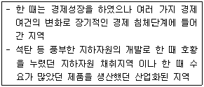
- 낙후지역
- 침체지역
- 과밀지역
- 과소지역
(정답률: 75%)
62. 다음 중 전국을 28개의 생활권으로 구분하고 각 생활권을 성격과 규모에 따라 대도시생활권, 지방도시생활권, 농촌도시 생활권으로 구분하였던 국토계획은?
- 제1차 국토종합개발계획
- 제2차 국토종합개발계획
- 제3차 국토종합개발계획
- 제4차 국토종합계획
(정답률: 62%)
63. 다음의 조건을 가진 A도시의 섬유업에 관한 L.Q 지수는?
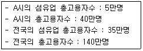
- 0.5
- 1.2
- 2.0
- 2.4
(정답률: 64%)
64. 다음 중 쇄신의 공간적 확산에 대한 설명으로 옳은 것은?
- 계층확산은 거리의 마찰효과에 가장 큰 영향을 받는다.
- 전염확산은 도시계층의 형태 또는 구성에 큰 영향을 받는다.
- 모릴(Morill)은 어떤 지역에서의 쇄신의 채택률을 수리 모형으로 설명하려고 하였다.
- 이전확산은 계층확산과 전염확산으로 구분할 수 있다.
(정답률: 53%)
65. 다음 중 성장거점도시의 선택기준으로 적절하지 못한 것은?
- 도시 성장의 영향이 파급될 수 있는 잠재력 있는 배후지를 가져야 한다.
- 정부의 지원뿐만 아니라 도시 자체가 개발 잠재력을 가지고 있어야 한다.
- 전 국토의 균형 발전을 도모해야 하므로 지리적 범위가 넓어야 한다.
- 도시에서 수용하게 될 산업·교육·문화 등 추가적 기능의 입지조건이 적절해야 한다.
(정답률: 77%)
66. 다음 중 지역적인 차원에서 산업부문간 경제활동의 상호의존 관계를 설명하고 최종 수요의 규모변동에 따른 경제적 파급효과를 분석할 수 있는 모형은?
- Economic base model
- Input-Output model
- Shift-share model
- Location quotient model
(정답률: 58%)
67. 다음 중 성장극 (growth pole)이라는 용어를 처음으로 사용한 프랑스의 경제학자는?
- Losch
- Perroux
- Hirshman
- Myrdal
(정답률: 65%)
68. 다음 중 크리스탈러가 중심지 이론(Central Place Theory)에서 제시한 공간 조직 원리에 해당하지 않는 것은?
- 시장원리
- 입지원리
- 행정원리
- 교통원리
(정답률: 64%)
69. 어떤 국가의 도시규모가 지프(Zipf)의 순위 – 규모법칙(rank-size rule)에 의한 순위규모분포(q=1)를 따른다고 할 때, 수위 도시의 인구가 100만 명이면 제4순위 도시의 인구는 얼마로 예상할 수 있는가?
- 40만명
- 33만명
- 25만명
- 20만명
(정답률: 75%)
70. 다음 중 제4차 국토종합계획 수정계획의 주요 내용으로 가장 거리가 먼 것은?
- 동북아 시대의 국토경영과 통일기반 조성
- 분권형 국토계획과 집행체계의 구축
- 네트워크형 인프라 구축
- 사회간접자본의 확충과 국토이용관리 효율화
(정답률: 55%)
71. 다음 중 윌리암슨(Williamson)이 주장한 지역 간 소득격차와 국가발전 단계와의 관계에 대한 설명으로 가장 옳은 것은?
- 윌리암슨은 미르달의 이론을 경험적으로 검증하였다.
- 지역간 소득격차는 국가 발전의 초기단계에 가장 작다.
- 지역간 소득격차는 역U자형 곡선을 그린다.
- 누적적 인과법칙에 의하여 지역격차가 발생함을 밝혔다. 한국 도시계획기사 전문 과외
(정답률: 77%)
72. 다음 중 알프레드 베버(A. Weber)가 제시한 입지이론의 입지 인자에 해당하지 않는 것은?
- 운송비 ·
- 노동비
- 집적이익
- 시설비
(정답률: 62%)
73. 다음 중 Technopolis의 구성요건이 되는 3대 존(zone)이 아닌 것은?
- Industrial Zone
- Academic Zone
- Administrative Zone
- Habitation Zone
(정답률: 52%)
74. 다음 중 제4차 국토종합계획 수정계획 (2006~2020)에서 국토축별 발전 방향에 대한 설명으로 가장 옳은 것은?
- 동해안축: 환태평양 진출을 위한 해양물류 및 산업경쟁력 강화
- 남해안축: 유라시아 진출 및 남북교류의 거점지대로 육성
- 중부내륙축: 국제물류·관광·산업특화지대로 육성
- 서해안축: 동북아를 향한 국제물류, 비즈니스, 신산업, 문화관광 기반의 성장 동력 육성
(정답률: 51%)
75. 다음 중 런던의 무질서한 확산을 방지하기 위해 그린벨트를 주요 내용으로 하는 대런던 계획을 작성한 사람은?
- 페리
- 하워드
- 아베크롬비
- 르꼬르뷔제
(정답률: 66%)
76. 다음 중 후버-피셔의 지역발전 5단계설의 두 번째 단계에 해당하는 것은?
- 1차 산업 전문화 및 지역 간 교역의 단계
- 2차 산업의 도입단계
- 다양한 공업화의 이행단계
- 수출용 3차 산업 전문화 단계
(정답률: 60%)
77. 다음 중 토다로(Michael Todaro)의 인구이동 모형에 대한 설명으로 가장 적합한 것은?
- 주로 선진국의 농촌과 도시 간의 인구이동현상을 설명하는 모형이다.
- 도시에서 주변 농촌으로 역류하는 인구이동현상을 설명하는 모형이다.
- 실질소득보다 기대소득의 개념으로 인구이동현상을 설명하는 모형이다.
- 사회주의 국가의 농촌과 도시간의 인구이동현상을 설명하는 모형이다.
(정답률: 65%)
78. 도시체계 속에서 도시규모가 어떤 모양으로 분포하는가를 설명하려는 여러 가지 이론 모형들 중 중심지이론에 바탕을 둔 것은?
- 베크만의 모형
- 시장기회 모형
- 사이먼의 비례효과법칙
- 엔트로피 극대화 모형
(정답률: 52%)
79. 다음 중 국토 및 지역계획의 공간단위로서 지역을 구분하는 동질성의 원칙과 관계가 없는 것은?
- 부드빌(Boudeville)
- 요인분석법
- 누스(Nourse)
- 베리(Berry)
(정답률: 54%)
80. 다음 중 리(E. S. Lee)가 인구이동을 설명하기 위해 사용한 개념에 해당하지 않는 것은?
- 흡인요인
- 밀어내는 요인
- 확률적 요인
- 중간개입 장애요인
(정답률: 57%)
5과목: 도시계획관계법규
81. 다음 중 도시 및 주거환경정비법에 따라 사업시행자(주거환경개선사업을 제외)가 관리처분계획에 포함시켜야 하는 사항에 해당하지 않는 것은?
- 분양설계
- 손실보상 및 토지 등의 수용
- 정비사업비의 추산액 및 그에 따른 조합원 부담규모와 부담시기
- 분양대상자별 분양예정인 대지 또는 건축물의 추산액
(정답률: 30%)
82. 다음 중 개발밀도관리구역에 대한 설명으로 옳지 않은 것은?
- 개발밀도관리구역의 지정기준, 관리 등에 관하여 필요한 사항은 대통령령으로 정하는 바에 따라 국토해양부장관이 정한다.
- 개발밀도관리구역은 개발행위로 인한 기반시설의 설치가 곤란한 주거지역에 대해서만 지정할 수 있다
- 특별시장·광역시장·시장 또는 군수는 개발밀도관리구역에서는 대통령령으로 정하는 범위에서 관련 조항에 따른 건폐율 또는 용적률을 강화하여 적용한다.
- 개발밀도관리구역을 지정 또는 변경하려면 해당 지방자치단체에 설치된 지방도시계획위원회의 심의를 거쳐야 한다.
(정답률: 62%)
83. 다음 중 도시공원의 구분에 따른 규모 기준이 옳은 것은?
- 어린이공원 - 1500m2 이상
- 묘지공원 – 10000m2 이상
- 도보권근린공원 – 20000m2 이상
- 체육공원 – 30000m2 이상
(정답률: 69%)
84. 다음 중 도시개발법상 도시개발구역의 지정권자가 도시개발사업의 시행자를 변경할 수 있는 경우에 해당하지않는 것은?
- 도시개발사업에 관한 기초조사를 실시한 결과가 포함된 기본계획을 제출하지 않은 경우
- 시행자로 지정된 자가 대통령령으로 정하는 기간에 도시개발사업에 관한 실시 계획의 인가를 신청하지 아니하는 경우
- 행정처분으로 시행자의 지정이나 실시계획의 인가가 취소된 경우
- 시행자의 부도로 도시개발사업의 목적을 달성하기 어렵다고 인정되는 경우
(정답률: 56%)
85. 다음 중 국토해양부장관이 개발제한구역의 지정 및 해제를 도시관리계획으로 결정할 수 있는 경우로 가장 거리가 먼 것은?
- 도시의 무질서한 확산을 방지할 필요가 있는 경우
- 도시민의 건전한 생활환경을 확보하기 위하여 도시의 개발을 제한할 필요가 있는 경우
- 국방부장관의 요청으로 보안상 도시의 개발을 제한할 필요가 있는 경우
- 올림픽 등 국제행사에 대비하여 대규모 자연공간을 확보할 필요가 있을 경우
(정답률: 71%)
86. 다음 중 도시개발법령에 따라 도시개발구역으로 지정할 수 있는 대상지역과 규모 기준이 옳은 것은?
- 도시지역 중 주거지역 : 3만 제곱미터 이상
- 도시지역 중 공업지역 : 5만 제곱미터 이상
- 도시지역 중 자연녹지지역 : 1만 제곱미터 이상
- 도시지역 외의 지역 : 66만 제곱미터 이상
(정답률: 71%)
87. 다음 중 수도권정비계획법에 따른 과밀부담금에 대한 설명으로 옳지 않은 것은?
- 과밀부담금은 건축비의 100분의 10으로 하되, 지역별 여건 등을 고려하여 대통령령으로 정하는 바에 따라 건축비의 100분의 5까지 조정할 수 있다.
- 과밀부담금의 부과 대상은 성장관리권역에 속하는 지역이다.
- 과밀부담금은 부과 대상 건축물이 속한 지역을 관할하는 시·도지사가 부과·징수한다.
- 시·도지사는 납부 의무자가 납부 기한까지 과밀부담금을 내지 아니하면 부담금의 100분의 5에 해당하는 가산금을 부과할 수 있다.
(정답률: 51%)
88. 다음 중 국토기본법에 따른 국토계획의 구분과 그 정의가 옳지 않은 것은?
- 국토종합계획은 국토 전역을 대상으로 하여 국토의 장기적인 발전방향을 제시하는 종합계획이다.
- 도종합계획은 도 또는 특별자치도의 관할구역을 대상으로 하여 해당 지역의 장기적인 발전방향을 제시하는 종합 계획이다.
- 지역계획은 특정지역을 대상으로 특별한 정책목적을 달성하기 위하여 수립하는 계획이다.
- 부문별계획은 특정 지역을 대상으로 특정 부문에 대한 단기적인 발전방향을 제시하는 계획이다.
(정답률: 77%)
89. 다음 중 수도권정비계획법령에서 규정하고 있는 인구집중 유발시설 기준으로 옳지 않은 것은?
- 고등교육법 제2조에 따른 학교로서 교육대학 또는 전문대학
- 업무용시설이 주용도인 건축물로서 그 연면적이 3만 제곱미터 이상인 업무용 건축물
- 건축물의 연면적이 1천 제곱미터 이상인 중앙행정기관 및 그 소속 기관의 청사
- 판매용시설이 주용도인 건축물로서 그 연면적이 1만5천 제곱미터 이상인 판매용 건축물
(정답률: 42%)
90. 특별시장·광역시장·시장 또는 군수는 몇 년마다 관할구역의 도시기본계획에 대하여 그 타당성 여부를 전반적으로 재검토하여 정비하여야 하는가?
- 3년
- 5년
- 10년
- 20년
(정답률: 77%)
91. 다음 중 도시지역의 시급한 주택난을 해소하기 위하여 주택건설에 필요한 택지의 취득·개발·공급 및 관리 등에 관하여 특례를 규정함으로써 국민주거생활의 안정과 복지 향상에 이바지함을 목적으로 하는 법률은?
- 주택법
- 택지개발촉진법
- 도시개발법
- 도시 및 주거환경정비법
(정답률: 71%)
92. 다음 중 산업단지의 지정에 관한 설명으로 옳지 않은 것은?
- 일반산업단지는 시·도지사 또는 대통령령이 정하는 시장이 지정한다. 단, 대통령령이 정하는 면적 미만의 산업단지의 경우에는 시장·군수 또는 구청장이 지정할 수 있다.
- 국토해양부장관은 관계 중앙행정기관의 장과 협의 후, 심의회의 심의를 거쳐 국가 산업단지를 지정하여야 한다.
- 도시첨단산업단지는 국토해양부장관이 지정하는 경우, 시·도지사의 신청을 받아 지정한다.
- 시장·군수 또는 구청장은 시·도지사에게 도시첨단 산업단지의 지정을 신청하고자 하는 때에는 산업단지 개발계획을 입안하여 제출하여야 한다.
(정답률: 39%)
93. 도시 및 주거환경정비법령상 시장·군수가 아닌 사업시행자가 시행하는 정비사업의 정비계획에 따라 설치되는 도시계획시설 중 그 건설에 소용되는 비용의 전부 또는 일부를 시장·군수가 부담할 수 있는 주요 정비기반시설에 해당하지 않는 것은?
- 광장
- 공동구
- 철도
- 공원
(정답률: 52%)
94. 다음 중 주택법상 각각 별개의 주택단지로 볼 수 있는 기준 시설에 해당하지 않는 것은?
- 철도·고속도로
- 폭 15m 이상인 일반도로
- 폭 8m 이상인 도시계획예정도로
- 자동차전용도로
(정답률: 60%)
95. 다음 중 주차장법령상 부설주차장의 설치에 관한 기준이 옳은 것은?
- 부설주차장의 설치의무는 도시계획구역 안에서만 적용된다.
- 부설주차장이 주차대수 400대의 규모 이하이면 시설물의 부지 인근에 단독 또는 공동으로 부설주차장을 설치할수 있다.
- 특별시장·광역시장·특별자치도지사 또는 시장은 부설주차장을 설치하면 교통 혼잡이 가중될 우려가 있는 지역에 대하여는 부설주차장의 설치를 제한할 수 있다.
- 시설물의 위치·용도·규모 및 부설주차장의 규모 등이 국토해양부령으로 정하는 기준에 해당할 때에는 해당 주차장의 설치에 드는 비용을 시장·군수·구청장에게 납부하는 것으로 부설주차장의 설치를 갈음할 수 있다.
(정답률: 56%)
96. 다음 중 공동주택 중심의 양호한 주거환경을 보호하기 위하여 세분하여 지정하는 용도지역은?
- 제1종 전용주거지역
- 제2종 전용주거지역
- 제1종 일반주거지역
- 제2종 일반주거지역
(정답률: 71%)
97. 다음 중 단지조성사업 등으로 설치되는 노외주차장에 경형 자동차를 위한 전용주차구획을 설치하여야 하는 기준으로 옳은 것은?(관련 규정 개정전 문제로 여기서는 기존 정답인 3번을 누르면 정답 처리됩니다. 자세한 내용은 해설을 참고하세요.)
- 노외주차장 총 주차대수의 1% 이상
- 노외주차장 총 주차대수의 3% 이상
- 노외주차장 총 주차대수의 5% 이상
- 노외주차장 총 주차대수의 10% 이상
(정답률: 47%)
98. 다음 중 기반시설에 속하지 않는 것은?
- 도로·철도·항만·공항·주차장 등 교통시설
- 광장·공원·녹지 등 공간시설
- 하수도·폐기물처리시설 등 환경기초시설
- 아파트연립주택·다세대주택 등 주거시설
(정답률: 75%)
99. 다음의 공원시설 중 유희시설에 해당되지 않는 것은?
- 시소
- 정글짐
- 사다리
- 야외극장
(정답률: 73%)
100. 다음 중 건축법령상 둘 이상의 필지를 하나의 대지로 할 수 있는 토지가 아닌 것은?
- 하나의 건축물을 두 필지 이상에 걸쳐 건축하는 경우 그 건축물이 건축되는 각 필지의 토지를 합한 토지
- 국토의 계획 및 이용에 관한 법률에 따른 도시계획시설에 해당하는 건축물을 건축하는 경우 그 도시계회시설이 설치되는 일단의 토지
- 건축물의 사용승인을 신청할 때 둘 이상의 필지를 하나의 필지로 합칠 것을 조건으로 건축허가를 하는 경우 그 필지가 합쳐지는 토지
- 도로의 지표 아래에 건축하는 건축물의 경우 국토해양부장관이 그 건축물이 건축되는 토지로 정하는 토지
(정답률: 50%)